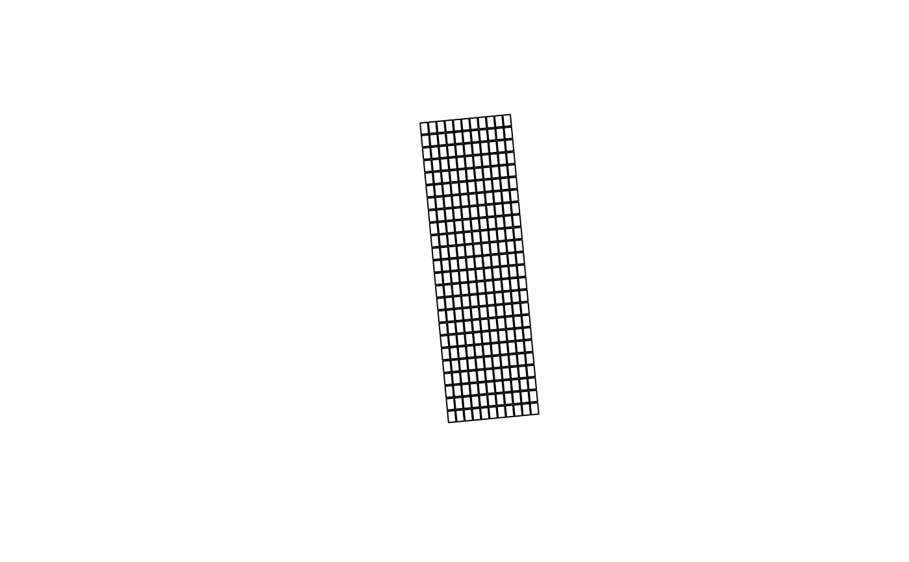

This functions takes a sf object or similar with 4 corners of an field experiment, find its center and rotation angle, make new plots based on other parameters and produces a sf object with geometry type MULTIPOLYGON.
Usage
corners_to_plots(
sf_object,
exp_length,
exp_width,
n_runs,
n_ranges,
exp_orientation = NULL,
plot_length = NULL,
plot_width = NULL
)Arguments
- sf_object
A sf object with geometry of 4 POINTS or a data frame with four rows of X,Y (Longitude and Latitude)
- exp_length
Total length of the experiment in unit meter
- exp_width
Total width of the experiment in unit meter
- n_runs
Number of runs in the experiment, typically along the shorter side of the experiment.
- n_ranges
Number of ranges in the experiment, typically along the longer side of the experiment.
- exp_orientation
OPTIONAL. Orientation of runs in the experiment. Takes "NS" or "EW", Default is "NS". NS is North-South; EW is East-West
- plot_length
OPTIONAL. Numeric value. Length of a plot in meters
- plot_width
OPTIONAL. Numeric value. Width of a plot in meters
Details
Default plot dimensions are set to 90% of the max plot size without any plot gaps. Suits most use cases.
For custom plot size, use optional plot size and plot width arguments
Use read_input_dat() to bring in your corners data
Examples
dat <- read_input_dat(cornersData, 4326)
plots_dat <- corners_to_plots(dat, 80, 24.2, 11, 24)
#> [1] "make sure the orientation is correct!!"
plot(plots_dat)
